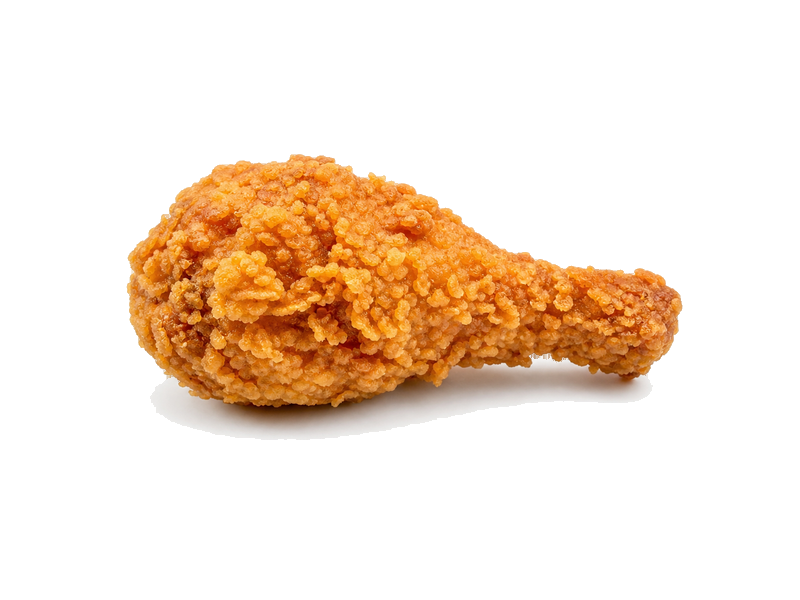

Fast food
Chrupki kurze (KFC styl)
Chrupki kurze (KFC styl): 19 g białka, 295 kcal, 15 g węglowodanów i 18 g tłuszczu na 100 g. Kategoria: Fast food.
Kalorie295 kcalna 100 g
Białko / proteiny19 g
Węglowodany15 g
Tłuszcz18 g
Cena (szac.)~3,79 złza 100 g
Ceny zaktualizowano: maj 2026 (szacunek — ceny w popularnych supermarketach)
Porcja: porcja (150g)
| Kalorie | 443 kcal |
|---|---|
| Białko | 28.5 g |
| Węglowodany | 22.5 g |
| Tłuszcz | 27 g |
| Cena (szac.) | ~5,69 zł |
Szczegółowe składniki odżywcze na 100 g
| Wartość energetyczna (kalorie) | 295 kcal |
|---|---|
| Białko (proteiny) | 19 g |
| Węglowodany | 15 g |
| Tłuszcz | 18 g |
| Tłuszcze nasycone | 4 g |
| Tłuszcze nienasycone | 14 g |
| Witaminy i minerały | Sód, Żelazo, Witamina B1 |
| Współczynnik kcal / 1 g białka | 15.5 |
| Cena produktu (szac. za 100 g) | ~3,79 zł |
| Cena za 100 g białka (szac.) | ~19,96 zł |